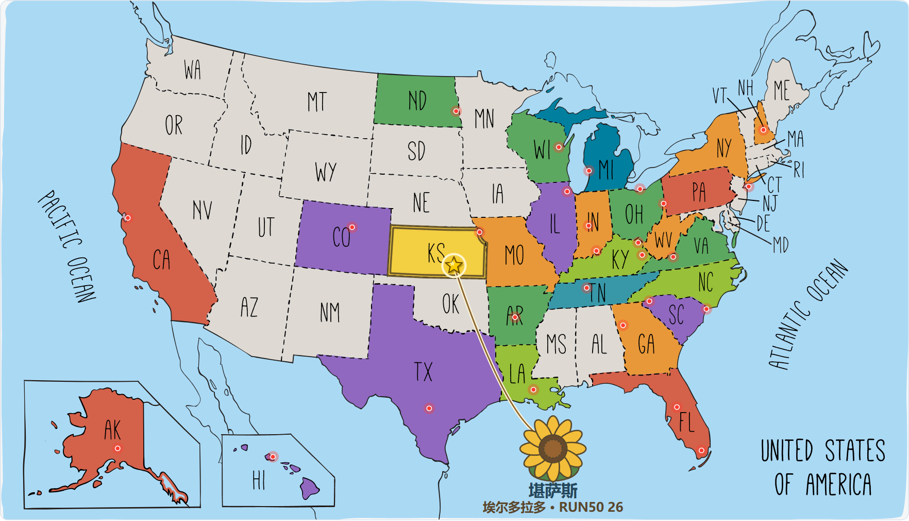
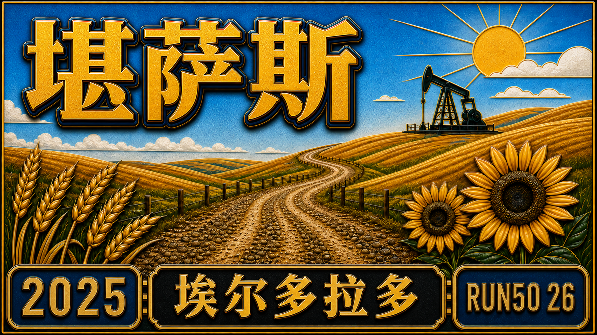

Run50 #第26州｜堪萨斯：地狱砂石马拉松｜冠军就是冠军，哪怕全马只有十个人！


风、牛群、麦田和砂石路，把一场小到只有十个人的全马跑成了冠军故事。


制图 / Arsenan
前言
自动驾驶，驶向地狱砂石
这次出发，我们依旧开着特斯拉自动驾驶，一路向西，目的地是 堪萨斯（Kansas），提起堪萨斯，大多数美国人的第一反应是：堪萨斯城酋长队（Kansas City Chiefs），还有那个在超级碗上手感火热的小马哥，Patrick Mahomes。
我不太狂热橄榄球，还是去跑步，这次要跑他们家门口的碎石路。比赛的名字就够霸气：Hell on Gravel，直译就是 地狱砂石马拉松。
光听名字就让人膝盖发抖，但这场比赛有股独特的味道：粗粝、原始、没有城市的喧嚣；只有风、牛群、麦田和无边无际的天空。
堪萨斯
第26州 · 堪萨斯｜风吹草浪的心脏地带
堪萨斯（Kansas）被称为“美国的心脏地带（Heart of America）”，它几乎位于全美的正中心，从地图上看，形状像是一块被量得整整齐齐的方砖，平整、低调，却又代表着美国中部最真实的一面。
堪萨斯的地貌以大平原（Great Plains）为主，土地广阔而平缓，风是一年四季的主角。开车穿州而过，窗外永远是金黄的麦浪、低矮的农舍，还有被风吹得弯腰的草。
夏天酷热、冬天寒冷，龙卷风时不时造访，堪萨斯也有着温厚的文化底色。电影《绿野仙踪》里的多萝西就来自堪萨斯，她在龙卷风里被吹到了魔法世界，也让“Toto, we’re not in Kansas anymore.”成为美国人耳熟能详的经典台词。
说到城市：托皮卡（Topeka） 是州府，地处中部，政府机构和历史建筑保存得很好。威奇托（Wichita） 是最大城市，早年靠飞机制造业起家，被称为“航空之都”。
劳伦斯（Lawrence） 是大学城，堪萨斯大学的所在地，气氛年轻而多元。堪萨斯城（Kansas City） 虽然部分跨到密苏里州，但影响力最大，是全州的经济与文化中心。
如果说美国的东部是历史的起点，西部是梦想的终点，那堪萨斯就是两者之间最真实的过渡地带。这里没有大都市的光鲜，却有属于自己的辽阔与平静。
对我们来说，这次的第26州，就是在这片风声呼啸的平原上，亲身感受“地狱砂石”的力量。
赛前一天
露营、抵达 埃尔多拉多
这次我们依旧沿用上次的模式，露营加跑步。上次的体验挺不错，所以这次继续。一路上边开车边充电，顺便去便利店买吃的，已经驾轻就熟。


加油站前停一停，伸展一下 · 摄影 / Arsenan
傍晚，我们来到伊利诺伊州的第一个营地。营地在一个小湖边，旁边还有篮球场。环境挺清静，风里有点草香。这一晚睡得很好，天亮得早。


桥下阴影里，换个角度自拍 · 摄影 / Arsenan


沿着池塘散步，太阳还没落下 · 摄影 / Arsenan
营地道路旁停着一排房车 · 摄影 / Arsenan


我在无人机和 Insta360 X5 的注视下，来了一场久违的个人篮球秀。虽然好几年没摸球了，手感还在。几次出手都稳稳进框。


木亭前，留下赛前的一张照片 · 摄影 / Arsenan
离开时我才发现，营地的标志是个圣路易斯式的大拱门（Archway），


房车营地入口的拱形招牌 · 摄影 / Arsenan
继续开车上路。终于要驶入堪萨斯的土地了。窗外是一望无际的玉米地，几头懒洋洋的牛在树荫下歇着，偶尔还能看到油井在远处慢悠悠地转着。Siqi 看着窗外说：“这画面，像极了 Windows 桌面。”


草原上方堆起大片云层 · 摄影 / Arsenan
笔直的公路伸向远处 · 摄影 / Arsenan
朋友 Brad 推荐给我们一条堪萨斯 trail ，这次是没时间去了，毕竟这次的重头戏，是那片真正的“地狱砂石”。一共十几个小时，终于抵达了这次的目的地：El Dorado（埃尔多拉多）。
名字听起来像西语，意思是“黄金之地”，听着就很浪漫，也有点墨西哥味。这小镇在堪萨斯的中南部，城市不大，但干净、安静。


埃尔多拉多的红砖街区 · 摄影 / Arsenan
蓝天之下，停在街边的店铺前 · 摄影 / Arsenan
我们先去了一个办公室取装备，比赛规模虽然小，但很用心。拿到号码布和比赛衣服，顺便看了明天的奖牌，造型帅气，金属质感十足，之后我们去了镇上一家墨西哥餐厅 Anita’s Mexican Restaurant。
这是一栋红顶小砖房，门口停着几辆老式车。店里灯光昏黄，墙上挂着西班牙画作，


在车里展示橙色赛事T恤 · 摄影 / Arsenan
空气里全是烤肉和辣椒的香味。我点了一个“战车套餐”，食物装在一个雕刻成石车轮形状的容器里，上桌时还滋滋作响，有点仪式感，也特别地道。味道比想象中好，果然小镇的墨西哥菜才是真正的本地味。


一口一口补足明天跑步的能量
吃饱喝足，我们先去赛道探探路，砂石路果然难开车，然后我们就前往 El Dorado 东边的露营地 Archway RV Park。
营地背后有一条小河，旁边是木桥和草地，环境清新自然。我们在木桌上吃了点小零食，风带着青草味，从河面吹来。唯一的槽点是洗澡间的热水系统有点不给力，但想想大多数人都开房车，也就释然了。露营地可以给车充电，这点挺方便，
特斯拉在夜里静静补能，我们也在帐篷里安稳入睡。


站在木桥上，留下赛前的照片 · 摄影 / Arsenan
木桥伸进一片绿色里 · 摄影 / Arsenan


树下和Siqi留张自拍 · 摄影 / Arsenan
坐在树荫里，指着远处聊聊天
十人的起点
Hell on Gravel · 十个人的砂石路马拉松
第二天清晨，天还没完全亮，我们就出发去起点了。这是我第一次用 Insta360 X5 当主力设备拍摄整场马拉松，心里既兴奋又有点忐忑，不知道能不能记录好这场“地狱之旅”。
比赛起点设在 El Dorado State Park 东侧的 East Park Trail，也是镇上最漂亮的地方之一，旁边是湖泊和树林，空气里带着点湿度，早晨的风有点凉。“Hell on Gravel” 是一场非常特别的比赛。
路线几乎就是一条笔直的碎石路，从 El Dorado 一路通往 Butler 县的乡间地带，中途折返，没有观众，只有几座老旧的木桥和一望无际的平原。
名字里的 “Hell” 并不是夸张。这类砂石路马拉松在美国中西部挺有代表性，起源于早期的越野骑行赛事，后来发展出跑步版本。跑在这上面，脚底不稳、阳光刺眼，对心理和体力都是考验。
早上六点，赛事总监喊我们集合。全马选手加起来不到十人，真的是“一排就能合影完”的规模。我穿着蓝色的阿森纳球衣，看上去还挺精神。起跑信号一响，所有人冲了出去，直奔小树林。
这段树林路面是压实的土路，两边树枝交错，阳光从缝隙里打下来，有点越野的味道。跑出树林后，是一座木桥，桥头就蹲着一位摄影师，拍得比很多大赛都专业。


浓密树荫里的碎石小路 · 摄影 / Arsenan

跑过桥，地狱就开始了。脚下换成了真正的碎石路。太阳从东方升起，光线打在平原上，像是给每一块石头都镀了层金。两边是无边的农田，空气清新，风吹麦浪。


日出前，农田旁的碎石路 · 摄影 / Arsenan


跑步画面上记录着里程和配速 · 摄影 / Arsenan
我心情挺好，配速稳定在 5 分多一点。五公里左右到了第一个补给点，几张折叠桌、几桶水，还有笑容灿烂的志愿者。我状态还不错，就摆手继续前进。摄影师又出现在前方，我赶紧摆了个姿势。


迎着镜头继续跑，路旁是一片绿意 · 摄影 / 赛事官方
砂石路上，脚步腾空的一瞬 · 摄影 / 赛事官方


背着晨光，跑过田野 · 摄影 / 赛事官方


不久后，我超过了一位穿越野包的跑者，他明显经验丰富，步伐稳、节奏均匀。我超他的时候还谦虚地点了个头，没多久我就拉开距离。十英里左右，天气开始热了起来。我在第二个补给点喝了几口水，挤了个能量胶。
没想到刚一抬头，那位被我超过的越野哥又出现了，他轻轻松松跑在我前面，背包里挂着自己的水袋，根本没停过。太阳越来越烈。碎石在鞋底碾出的声音变成了节奏。
我低头看着那条笔直的砂石路，它在阳光下延伸到天边，像一条通往地狱的路，也像一条通往荣誉的路。


举起手，给自己加把劲 · 摄影 / Arsenan
砂石与烈日
晒、热与冠军的诞生
我稳住自己的节奏，不急不躁。没一会儿，我又把那个越野选手超过了，而这一别，他再也没能追上来。前面的补给点有冰可乐，这在大热天简直是神级的存在。那一口下去，爽啊！
路边偶尔有大家伙轰隆隆开过，那不是卡车，而是农业巨兽：喷洒农药的高轮农机，轮胎比我还高，开过的时候扬起的尘土像电影特效。我给司机比了个“rock”手势，他也冲我举了个大拇指，像两个在地狱公路上相遇的战士。


一辆大型农用机械从旁边驶过 · 摄影 / Arsenan

不知不觉到了折返点，地上插着个黄色牌子写着“MARATHON TURN AROUND”，意味着我已经跑出了一半。牌子旁边的志愿者是一位老奶奶，笑得很亲切，就是差点把我当成50公里选手，准备让我接着跑下去。
回程的路稍微热闹一点，能看到对面方向的跑者。有人已经面无表情戴上了痛苦面具，大概是顶着正面的太阳跑太久，晒得不轻。我挨个举手打招呼，拍了几个high five，互相加点士气。


摄影师又出现了，还是那个戴牛仔帽的大哥，开着SUV一路追着我们拍。我能听到相机快门在“啪啪啪”响，专业得不行。后来我看了他拍的照片，光线、角度、姿势都完美，那些画面，正是我跑的时候没时间好好看的风景：


树木之间，一段起伏的白色砂石路 · 摄影 / 赛事官方


跑过树荫，继续迎向镜头 · 摄影 / 赛事官方
路边停着汽车，和跑友打个招呼 · 摄影 / Arsenan
路边的小狗趴在树荫下乘凉，乌龟慢悠悠地往水沟里爬，车窗上贴着一只蚂蚱不肯走，还有志愿者穿着橘色背心在阳光下闪闪发亮。


树荫下，后备厢就是补给站 · 摄影 / 赛事官方
砂石路旁的一只小乌龟 · 摄影 / 赛事官方


两位穿橙色赛事T恤的工作人员 · 摄影 / 赛事官方
路边草地上的雁群 · 摄影 / 赛事官方
绿色的灌木、灰白的砂石路、蓝得晃眼的天，一切都有种中西部特有的荒凉美。那种人与自然既对抗又共处的感觉。回程路上我知道，我是全马的领头羊。虽然没有观众，也没有现场播报，但我心里暗暗说：“冠军，就在前面。”
不过天气越来越热，脚下的碎石越来越松，补给也开始变得重要。每次看到桌上摆着水，我都要灌几口；没补给的时候，就盯着偶尔出现的志愿者，跟他们要上一杯。大家都特别友好，笑着递水，还和我说“Keep going”。
跑着跑着，我发现后面出现了一个人影，越来越近。我的心开始紧张，太阳底下的影子也越来越长。看样子是有人要追上来了。我试着加速，但腿不太听话，最后那人果然超了我。
我心里叹了口气：好吧，冠军就让给他吧。可再仔细一看，咦，这哥们我没见过，原来是50公里组的大神！顿时豁然开朗，我又开心了，恢复了士气：那就继续领头吧，全马组的冠军，必须保住！


抬头喝水，给自己降降温 · 摄影 / Arsenan
但后面的几英里真的难。太阳像烤炉，地面都在发光。比赛前半段的新鲜感早就褪去，剩下的只有干、热、和无尽的石子滑动。终于，前方出现一个志愿者奶奶，她指着右边说“Almost there, just a few turns!”
我点头照做，可惜太自信，拐错了。结果一不小心跑进了人家农田里。草越来越高，路越来越窄，我心想坏了。只能硬着头皮继续往前，想着早晚能回到主路。跑了好一阵，GPS都快失灵了，四下没人，我灵机一动：“我的特斯拉在起点，那我就朝着车的方向跑吧。”
靠着方向感，我终于重新爬上公路，又在镇子里晃了一段。脚底砂石全是火，连呼吸都烫。

然后，我看见了终点拱门。志愿者们都愣住了，看着我从完全相反的方向跑回来。我一边喘气一边抱怨：“我跑错了！我刚刚绕进农田了，要不这成绩能更好！”
可最意外的是，他们随口说了一句：“You’re the first full marathon finisher!”我愣了三秒，冠军？尊嘟假嘟？看来今年的选手水平确实朴实无华。
我亮出手表，展示我的GPS数据：“看吧，我可比全马还多跑两英里，这冠军拿得一点都不亏！”太阳正好照在终点的草地上，风吹动那面写着“Hell on Gravel”的旗子，那一刻我突然觉得：地狱也没那么可怕，只是有点热罢了。


晨光里的砂石路与奔跑身影 · 摄影 / 赛事官方
回到拱门下，举起双臂 · 摄影 / 赛事官方


举起奖牌，留下冠军纪念 · 摄影 / 赛事官方
回到终点公园，画面里的里程已经超过全马 · 摄影 / Arsenan
返程路上
跑完吃个韩餐，回家
比赛结束，我在公园的木亭下拉伸。
桌上摆着冰镇汽水和橙子，阳光从屋顶的缝隙里钻进来，一切都亮亮的。拿到了那块巨大的奖牌，火焰、齿轮、碎石，全都刻在一块金属板上，看着就有种“跑完地狱”的气势。
冠军还有一个木头做的特别奖牌，橄榄木的纹路很好看，摸上去很有质感。我和 Siqi 在亭子里拍了几张照片，又象征性地拉伸了几下，然后开着特斯拉一路往堪萨斯城方向去。


Hell on Gravel完赛奖牌 · 摄影 / Arsenan


第一站照例是 Planet Fitness 洗澡站。那水一冲，整个人像被刷新了一样，皮肤终于从“碎石风干模式”切回“人类模式”。
接着我们在堪萨斯市中心找了一家韩餐厅，点了辣豆腐汤和炒粉丝。


坐回车里，准备返程 · 摄影 / Arsenan


又辣又香的，瞬间补回跑掉的所有能量。吃饱后，我们又去了街角的彩色墙拍照。

墙上是粉色的怪兽、绿色的蜥蜴，我穿着比赛发的橙色 T 恤，胸前挂着巨大得有点夸张的奖牌，背后停着一辆白色 Rivian 电车。离开堪萨斯，我们上了 I-70 高速。


晚上住了一家小旅馆，第二天一早继续往东开。快到圣路易斯时，远处的 Gateway Arch 在阳光下发亮，


返程路上，远望圣路易斯大拱门 · 摄影 / Arsenan
天空的云层很低，风筝在空中飘着，红绳子随风舞动。


车里休息，准备继续返程 · 摄影 / Arsenan
特斯拉自动驾驶稳稳地行进，我靠在座椅上，看着窗外的田野从金黄变成暗绿。
下午回到家，天居然还没黑。


回到家门口，这趟旅程结束 · 摄影 / Arsenan
冠军后记
不谦虚，我就是冠军
这次堪萨斯的比赛，说难也不难，说容易也真不容易。赛道就是一条直线，碎石、热风、尘土，一路到底。没有观众，没有阴凉，也没音乐。有的只是你自己，和那条永远跑不完的路。
十个人参赛，我拿了第一。但冠军就是冠军，跑得快就是跑得快。后来我也在想，我为什么总要强调“就十个人”？好像在给自己找理由，怕别人觉得这个冠军不值钱。
这可能是一种很典型的中国式习惯：从小被教育要谦虚，要低调，说自己“还行吧”“运气好”。可在美国，大家更习惯直接说：“我干得不错。”
不是自夸，而是一种对结果的尊重。你做到了，就该承认。我也慢慢明白了，过分谦虚其实也是另一种自我否定。我们常说过程重要、结果无所谓，可现实很多时候就是结果导向的。
你跑得最快，就该承认自己厉害。哪怕只有十个人，你依然是那十个人里最先冲线的那个。有时候，人得学会接受自己的好。不用掩饰，也不用贬低。冠军就是冠军，这没什么好回避的。
这是我 Run50 的第 26 个州。还差二十四场，这事儿还没干完。“地狱”都跑过了，还有啥可怕的呢？